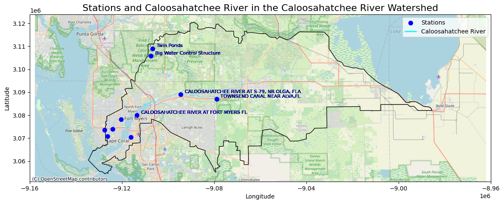
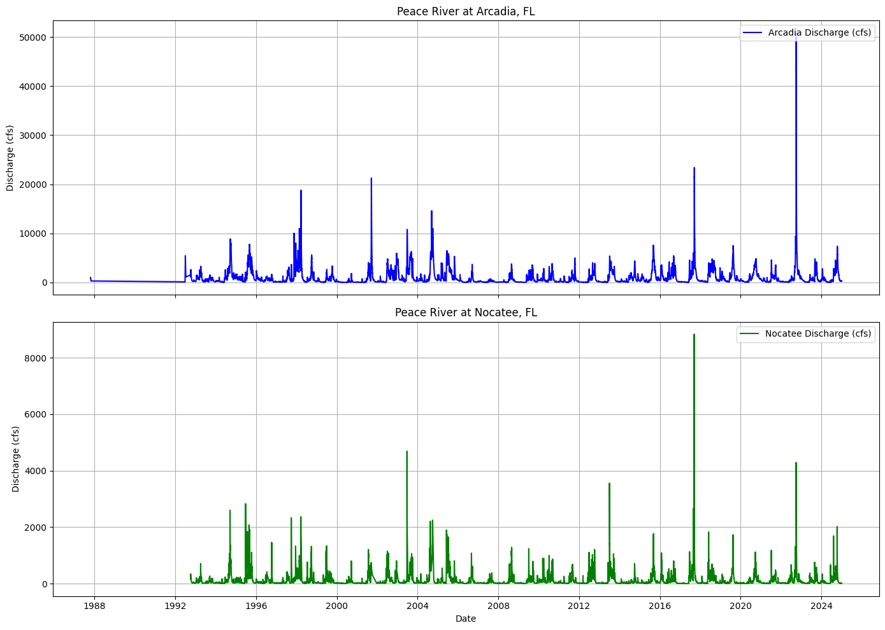
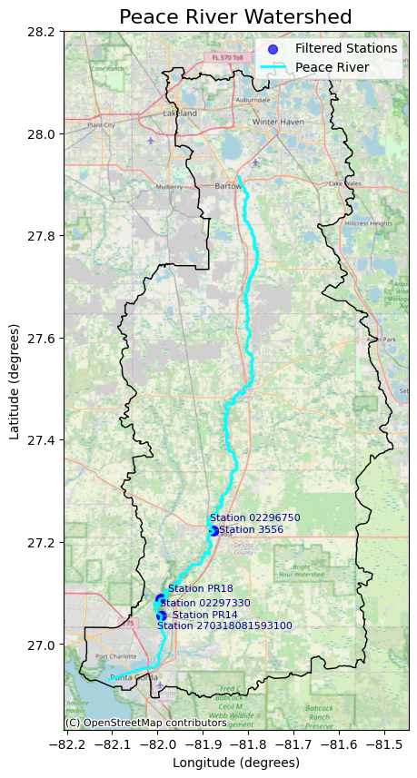

River data#
The Peace River is a significant contributor of freshwater and associated nutrients to Charlotte Harbor, which subsequently influences coastal waters where red tides occur.
import pandas as pd
import matplotlib.pyplot as plt
import datetime
import geopandas as gpd
import contextily as ctx
from shapely import wkb
from shapely.geometry import Point
from adjustText import adjust_text
import os
import dataretrieval.nwis as nwis
import requests
from io import StringIO
import warnings
warnings.simplefilter(action='ignore', category=UserWarning)
1. Discharge#
1.1 Select station close to the Gulf of America#
The USGS monitoring station 02296750 at State Road 70 in Arcadia, Florida is ued to understand the Peace River’s influence on the Charlotte Harbor estuarine system and red tides in the Gulf of America. It provides long-term discharge and water level data, essential for assessing freshwater inflow, nutrient loading, and salinity—key factors driving red tides. Its location near the river’s mouth makes it valuable for studying freshwater-coastal interactions. While other stations, such as 02295637 at Zolfo Springs and 02294898 at Fort Meade, also monitor discharge and water levels, Arcadia’s strategic position and historical data since 1912 make it particularly valuable for studying red tides
For watershed boundary data:
https://www.usgs.gov/national-hydrography
https://www.usgs.gov/national-hydrography/access-national-hydrography-products
For water level data:
https://chnep.wateratlas.usf.edu/datadownload/
This code reads the flow data to identify stations close to Charlotte Harbour
# Load the CSV file (update path if needed)
#file_path = 'input/DataDownload_4344079_row.csv'
HU=['03100101', '03090205'] #Peace river basin, Caloosahatchee River Basin
river=['Peace', 'Caloosahatchee']
selection=1
basin=HU[selection]
file_path = f'input/HU8_{basin}_Flow.csv'
#data = pd.read_csv(file_path)
data = pd.read_csv(file_path, low_memory=False, dtype={'StationID': str, 'Longitude_DD': float})
# Filter the data for Elevation and Flow parameters
filtered_data = data[data['Parameter'].isin(['Level_FT_NAVD88', 'Flow_CFS'])]
filtered_data = filtered_data.dropna(subset=['Latitude_DD', 'Longitude_DD'])
# Convert to GeoDataFrame
gdf = gpd.GeoDataFrame(
filtered_data,
geometry=gpd.points_from_xy(filtered_data['Longitude_DD'], filtered_data['Latitude_DD']),
crs='EPSG:4326'
)
# Remove duplicates based on station location and name
unique_stations = gdf[['StationName', 'geometry']].drop_duplicates()
# Filter for stations close to the Gulf of Mexico
if basin == '03100101':
lat_lon =[27.5, 26.5, -82.5, -81.5]
elif basin == '03090205':
lat_lon =[27.5, 26.5, -90, -81.5]
gulf_stations = unique_stations[
(unique_stations.geometry.y <= lat_lon[0]) &
(unique_stations.geometry.y >= lat_lon[1]) &
(unique_stations.geometry.x >= lat_lon[2]) &
(unique_stations.geometry.x <= lat_lon[3])
]
# Load the Peace River Watershed shapefile
#NHD_H_03100101_HU8_Shape
watershed = gpd.read_file(f'input/NHD_H_{basin}_HU8_Shape/WBDHU8.shp')
# Load the NHD flowline data
#e.g, NHD_H_03100101_HU8_Shape
flowlines = gpd.read_file(f'input/NHD_H_{basin}_HU8_Shape/NHDFlowline.shp')
# Convert to 2D geometry (strip Z values)
flowlines['geometry'] = flowlines['geometry'].apply(
lambda geom: wkb.loads(wkb.dumps(geom, output_dimension=2))
)
# Filter the flowlines to select only Peace River
print(flowlines['gnis_name'].unique())
if basin == '03100101':
river_to_plot = flowlines[flowlines['gnis_name'].str.strip().str.lower() == 'peace river']
elif basin == '03090205':
river_to_plot = flowlines[flowlines['gnis_name'].str.strip() == 'Caloosahatchee River']
# Define available basemaps
basemaps = {
'OpenStreetMap': ctx.providers.OpenStreetMap.Mapnik,
'CartoDB Positron': ctx.providers.CartoDB.Positron,
'CartoDB DarkMatter': ctx.providers.CartoDB.DarkMatter,
'CartoDB Voyager': ctx.providers.CartoDB.Voyager,
'Esri World Imagery': ctx.providers.Esri.WorldImagery,
'Esri World Topo Map': ctx.providers.Esri.WorldTopoMap
}
# elect basemap
choice = 1 # 1 = OpenStreetMap
selected_basemap = list(basemaps.values())[choice - 1]
# Plotting
fig, ax = plt.subplots(figsize=(14, 12))
# Plot watershed boundary
watershed.to_crs(epsg=3857).plot(ax=ax, edgecolor='black', facecolor='none', linewidth=1)
# Plot the stations near the Gulf of Mexico
gulf_stations.to_crs(epsg=3857).plot(ax=ax, markersize=50, color='blue', label='Stations')
# Add station names:
# - Remove 'Peace River' from labels
# - Plot every second station except the last one
for i, row in enumerate(gulf_stations.to_crs(epsg=3857).iterrows()):
if basin == '03100101':
#row[1]['StationName']
label = row[1]['StationName'].replace('PEACE RIVER AT ', '').\
replace('PEACE RIVER BELOW CHARLIE CREEK','').replace('FL','')
if i % 2 == 0 or i == len(gulf_stations) - 1: # Always show the last station
ax.text(row[1].geometry.x, row[1].geometry.y, label,
fontsize=8, ha='left', va='bottom', color='darkblue')
elif basin == '03090205':
# Strip whitespace and standardize case
gulf_stations.loc[:, 'StationName'] = gulf_stations['StationName'].str.strip()
# Add station labels (only for key stations)
stations_to_label = [
'CALOOSAHATCHEE RIVER AT S-79, NR.OLGA, FLA',
'CALOOSAHATCHEE RIVER AT FORT MYERS FL',
'TOWNSEND CANAL NEAR ALVA,FL',
'Big Water Control Structure',
'Twin Ponds'
]
# Iterate outside the main loop and add labels only for key stations
for i, row in gulf_stations.to_crs(epsg=3857).iterrows():
if row['StationName'] in stations_to_label:
label = row['StationName']
ax.text(
row.geometry.x*0.9998,
row.geometry.y*1.0001,
label,
fontsize=8,
ha='left',
va='bottom',
color='darkblue'
)
# Plot the Peace River
river_to_plot.to_crs(epsg=3857).plot(ax=ax, color='cyan', label=f'{river[selection]} River', linewidth=2)
# Add selected basemap (lower resolution for faster rendering)
ctx.add_basemap(ax, source=selected_basemap, zoom=10)
# Fix x-axis label crowding (reduce number of ticks)
ax.set_xticks(ax.get_xticks()[::2]) # Show every second tick to reduce clutter
# Customize plot
plt.title(f'Stations and {river[selection]} River in the {river[selection]} River Watershed', fontsize=16)
plt.xlabel('Longitude')
plt.ylabel('Latitude')
plt.legend()
# Create 'figures' folder if it does not exist
if not os.path.exists('figures'):
os.makedirs('figures')
# Save figure
plt.savefig(f'figures/data_{river[selection]}_river_fig1_map.png', dpi=300)
plt.show()
[None 'Powell Creek' 'Caloosahatchee Canal' 'Long Hammock Creek'
'Banana Branch' 'Nicodemus Slough' 'Okaloacoochee Branch' 'Hancock Creek'
'York Branch' 'Caloosahatchee River' 'Manuel Branch' 'Orange River'
'Pollywog Creek' 'Daughtrey Creek' 'Trout Creek' 'Able Canal' 'Rim Canal'
'East Prong Pollywog Creek' 'Fox Canal' 'Stricklin Gully' 'Roberts Canal'
'Bee Branch' 'Telegraph Creek' 'Owl Creek' 'Jacks Branch' 'Spanish Creek'
'Whiskey Creek' 'George Canal' 'Popash Creek' 'Yellow Fever Creek'
'Dog Canal' 'Fort Simmons Branch' 'King Canal' 'Townsend Canal'
'Bullhead Strand' 'Billy Creek' 'Tenmile Canal' 'Chaparral Slough'
'Clay Gully']

In peace river: The discharge data from USGS station 02296750 represents the daily streamflow measurements for the Peace River at Arcadia, Florida in cubic feet per second (cfs). The data spans from October 1, 1985, to the present, capturing seasonal variations, storm events, and long-term hydrological trends. The station is part of the USGS National Water Information System (NWIS), which follows standardized methods for data collection and processing. However, the data may contain uncertainties due to factors such as instrument calibration errors, changes in channel geometry, flow estimation methods, and environmental factors like debris or vegetation influencing water flow. The data is marked with an approval code (‘A’), indicating that it has been quality-checked and meets USGS data accuracy standards. However, for future study we need to account for measurement errors by learning about the error and distribution and missing data through using a physics-based model.
gulf_stations.to_crs(epsg=3857)
| StationName | geometry | |
|---|---|---|
| 20877 | CALOOSAHATCHEE RIVER AT S-79, NR.OLGA, FLA | POINT (-9094625.945 3089025.953) |
| 42815 | ARIES CANAL AT CAPE CORAL, FL | POINT (-9127527.935 3073629.165) |
| 51332 | COURTNEY CANAL AT CAPE CORAL, FL | POINT (-9126321.955 3070862.937) |
| 60641 | MEADE CANAL AT CAPE CORAL, FL | POINT (-9120384.719 3078125.399) |
| 70143 | SAN CARLOS CANAL AT CAPE CORAL, FL | POINT (-9124095.487 3074009.553) |
| 98498 | CALOOSAHATCHEE RIVER AT FORT MYERS FL | POINT (-9113608.891 3079943.65) |
| 100249 | TOWNSEND CANAL NEAR ALVA,FL | POINT (-9078999.049 3087006.528) |
| 101787 | Big Water Control Structure | POINT (-9107456.196 3105744.77) |
| 103147 | Twin Ponds | POINT (-9106734.734 3108963.328) |
| 103408 | WHISKEY CREEK AT FT. MYERS, FL | POINT (-9116086.473 3070413.444) |
The most important stations are those on the mainstem of the Caloosahatchee River (especially S-79 and Fort Myers) and those associated with water control structures. These stations are directly linked to nutrient loading into the Gulf, which drives red tide events. Stations in smaller canals and tributaries are likely less influential at the regional scale but may still affect local water quality and nutrient dynamics. Most relevant stations for TN, TP, and red tide impact:
CALOOSAHATCHEE RIVER AT S-79, NR.OLGA, FLA: S-79 (W.P. Franklin Lock & Dam) is the primary control point for freshwater releases from Lake Okeechobee into the Caloosahatchee River, where nutrient loading from Lake Okeechobee, especially during high discharge events, is known to fuel red tide events along the Gulf Coast.
CALOOSAHATCHEE RIVER AT FORT MYERS FL: This station is located near the mouth of the Caloosahatchee River and would provide insight into nutrient loading directly into the estuary and the Gulf of Mexico. Strong relationship between freshwater nutrient loading and harmful algal blooms (HABs) would make this station important for monitoring.
TOWNSEND CANAL NEAR ALVA, FL: This canal drains into the Caloosahatchee River upstream of the estuary, potentially influencing nutrient delivery. It may help explain how upstream sources of nutrients impact nutrient dynamics downstream.
Big Water Control Structure: Nutrient loading influenced by water control decisions would make this an important location for understanding how artificial water management influences nutrient delivery to the Gulf.
Twin Ponds: While not directly on the Caloosahatchee River, this station may represent an additional nutrient source or retention area that contributes to downstream loading.
1.2 Downloading data#
download = False
if download:
# # Define station ID and parameter for discharge
# site = '02297100' # Nocatee, FL station ID
# parameter = '00060' # Discharge in cfs
# start_date = '1985-01-01'
# end_date = '2025-01-01'
#https://waterservices.usgs.gov/nwis/iv/?format=json&sites=02296750¶meterCd=00060&startDT=1985-01-01&endDT=2025-01-01
# Site number and parameter code for discharge (00060)
site = '02296750'
parameter = '00060'
start_date = '1985-01-01'
end_date = '2025-01-01'
# Retrieve data
df = nwis.get_record(sites=site, parameterCd=parameter, start=start_date, end=end_date)
# Display data
df
# Save to CSV
df.to_csv('input/data_river_fig1_peace_river_discharge.csv', index=True)
3. Plot discharge#
# Load the discharge data for both Arcadia and Nocatee from CSV files
file_arcadia = 'input/peace_river_discharge_arcadia.csv'
file_nocatee = 'input/peace_river_discharge_nocatee.csv'
# Read data files
discharge_arcadia = pd.read_csv(file_arcadia)
discharge_nocatee = pd.read_csv(file_nocatee)
# Convert 'datetime' columns to datetime format
discharge_arcadia['datetime'] = pd.to_datetime(discharge_arcadia['datetime'])
discharge_nocatee['datetime'] = pd.to_datetime(discharge_nocatee['datetime'])
# Create subplots for Arcadia and Nocatee
fig, axs = plt.subplots(2, 1, figsize=(14, 10), sharex=True)
# Plot for Arcadia
axs[0].plot(discharge_arcadia['datetime'], discharge_arcadia['00060'], label='Arcadia Discharge (cfs)', color='blue')
axs[0].set_ylabel('Discharge (cfs)')
axs[0].set_title('Peace River at Arcadia, FL')
axs[0].legend(loc='upper right')
axs[0].grid(True)
# Plot for Nocatee
axs[1].plot(discharge_nocatee['datetime'], discharge_nocatee['00060'], label='Nocatee Discharge (cfs)', color='green')
axs[1].set_ylabel('Discharge (cfs)')
axs[1].set_title('Peace River at Nocatee, FL')
axs[1].legend(loc='upper right')
axs[1].grid(True)
# Set common x-label
plt.xlabel('Date')
# Adjust spacing between subplots
plt.tight_layout()
plt.savefig('figures/data_river_fig2_discharge.png')
# Display the plot
plt.show()

Arcadia station (USGS 02296750) records higher flow rates compared to the Nocatee station (USGS 02297100). This discrepancy arises because the Arcadia station monitors the main stem of the Peace River, capturing cumulative flow from a larger upstream drainage area, whereas the Nocatee station measures discharge from Joshua Creek, a smaller tributary within the Peace River Basin. For studying red tides in the Gulf of Mexico, discharge data from the Arcadia station is more pertinent. Monitoring at Arcadia provides a comprehensive understanding of the total freshwater inflow and nutrient loads entering the estuarine and coastal systems.
2. Nutrients#
2.1 Nurtient data#
The Total Nitrogen (TN) and Total Phosphorus (TP) data for the Peace River Basin were obtained from the Water Atlas, which serves as a central repository for water quality, hydrology, and environmental data across various Florida watersheds. The Peace River Basin, located in southwest Florida, is a vital waterway that supports both ecological and human needs, including municipal water supply, agriculture, and recreation. The basin is highly influenced by natural and anthropogenic factors, including urban development, agricultural runoff, and phosphate mining, which contribute to nutrient loading and water quality issues such as eutrophication and harmful algal blooms (HABs). The Water Atlas compiles data from multiple sources, including the Southwest Florida Water Management District (SWFWMD), the Florida Department of Environmental Protection (FDEP), and local environmental agencies. To access TN and TP data for the segment of the Peace River near the Gulf of Mexico we focus on:
Peace River (CHNEP): This segment falls under the jurisdiction of the Coastal & Heartland National Estuary Partnership (CHNEP) and encompasses areas closer to the river’s mouth near the Gulf.
Peace River Estuary (Upper Segment North) (CHNEP): This section includes the upper portion of the estuary where the Peace River transitions into tidal waters as it approaches the Gulf.
Tidal Peace River (CHNEP): This segment covers the tidal sections of the Peace River within the CHNEP’s monitoring area, reflecting the river’s interaction with Gulf tides.
By selecting these segments, we obtain TN and TP data relevant to the lower reaches of the Peace River near its confluence with the Gulf of Mexico.
Data information: https://chnep.wateratlas.usf.edu/waterbodies/basins/7/peace-river-basin
Data information: https://chnep.wateratlas.usf.edu/waterbodies/basins/1/caloosahatchee-river-basin
Data download: https://chnep.wateratlas.usf.edu/datadownload/Default.aspx
DataSource Values#
USGS_NWIS– USGS National Water Information System – A comprehensive database of surface water, groundwater, and water quality data collected by the U.S. Geological Survey (USGS).LEGACYSTORET_21FLA– Legacy STORET data from Florida – Historical water quality data stored in the legacy version of the STORET database maintained by the EPA.LEGACYSTORET_1113S000– Legacy STORET data from Florida – Historical data from a specific Florida station stored in the legacy STORET database.LEGACYSTORET_21FLSWFD– Legacy STORET data from the Southwest Florida Water Management District – Historical data stored in the legacy STORET database collected in the Southwest Florida region.STORET_21FLPOLK– STORET data from Polk County, Florida – Modern STORET data from water quality monitoring stations in Polk County.POLKCO_NRD_WQ– Polk County Natural Resources Department – Water Quality – Data collected specifically by Polk County’s water quality monitoring programs.STORET_FLPRMRWS– STORET data from the Peace River Manasota Regional Water Supply Authority – Data collected from water supply and quality monitoring stations in the Peace River basin.STORET_21FLSWFD– STORET data from the Southwest Florida Water Management District – Data collected from water quality monitoring stations in Southwest Florida.LEGACYSTORET_21FLGW– Legacy STORET groundwater data from Florida – Historical groundwater data stored in the legacy STORET database.STORET_SWFMDDEP– STORET data from the Southwest Florida Water Management District submitted to the Florida Department of Environmental Protection (DEP).STORET_21FLGW– STORET groundwater data from Florida – Modern groundwater data collected under the STORET system.STORET_21FLFTM– STORET data from Fort Myers, Florida – Modern STORET data collected from water quality monitoring stations in Fort Myers.STORET_21FLTPA– STORET data from Tampa, Florida – Modern STORET data collected from water quality monitoring stations in the Tampa area.LAKEWATCH_V– Florida LAKEWATCH – A volunteer-based water quality monitoring program managed by the University of Florida that focuses on lakes.WIN_21FLMOSA– WIN (Watershed Information Network) data from Mosaic – Data from Mosaic-operated monitoring stations under the WIN program.STORET_21FLWQSP– STORET data from Florida water quality monitoring stations – Data from various Florida monitoring stations collected under the STORET system.WIN_21FLSWFD– WIN data from the Southwest Florida Water Management District – WIN data collected from monitoring stations in Southwest Florida.WIN_FLPRMRWS– WIN data from the Peace River Manasota Regional Water Supply Authority – Data from the Peace River basin under the WIN program.WIN_21FLTPA– WIN data from Tampa, Florida – Data from monitoring stations in the Tampa area under the WIN program.WIN_21FLWQA– WIN data from Florida water quality monitoring – WIN data from statewide water quality monitoring stations.WIN_21FLGW– WIN groundwater data from Florida – Groundwater data collected under the WIN program.WIN_21FLPOLK– WIN data from Polk County, Florida – Data collected from monitoring stations in Polk County under the WIN program.WIN_21FLFTM– WIN data from Fort Myers, Florida – Data from monitoring stations in Fort Myers under the WIN program.WIN_21FLCHCO– WIN data from Charlotte County, Florida – Data from monitoring stations in Charlotte County under the WIN program.
QACode Values#
NaN– No QA code assignedE– Estimated value<– Below detection limitA– AcceptableJ– Estimated value (within detection limit but uncertain)Q– Questionable data+– Added value during processingQ+– Questionable but added valueY– Lab analysis confirmationY+– Confirmed but added valueQY– Questionable lab-confirmed valueV– Verified valueAJ– Acceptable but estimated valueU– Not detected (below detection limit)
# Read the file (adjust path if needed)
file_path = 'input/TN_TP.csv' # Adjust path if needed
df = pd.read_csv(file_path)
# Convert SampleDate to datetime and drop invalid dates
df['SampleDate'] = pd.to_datetime(df['SampleDate'], errors='coerce')
df = df.dropna(subset=['SampleDate'])
display(df)
# Filter TN and TP data
tn_data = df[df['Parameter'] == 'TN_ugl']
tp_data = df[df['Parameter'] == 'TP_ugl']
# Sort by SampleDate
tn_data = tn_data.sort_values(by='SampleDate')
tp_data = tp_data.sort_values(by='SampleDate')
# Plot TN and TP as points
plt.figure(figsize=(14, 7))
plt.scatter(tn_data['SampleDate'], tn_data['Result_Value'], label='Total Nitrogen (TN)', color='blue', s=40)
plt.scatter(tp_data['SampleDate'], tp_data['Result_Value'], label='Total Phosphorus (TP)', color='orange', s=40)
# Add labels and title
plt.xlabel('Sample Date')
plt.ylabel('Concentration (ug/L)')
plt.title('TN and TP Over Time')
# Add legend
plt.legend()
# Improve formatting
plt.xticks(rotation=45)
plt.grid(True)
# Adjust spacing between subplots
plt.tight_layout()
plt.savefig('figures/data_river_fig3_TN_TP_all.png')
# Show plot
plt.show()
---------------------------------------------------------------------------
FileNotFoundError Traceback (most recent call last)
Cell In[6], line 3
1 # Read the file (adjust path if needed)
2 file_path = 'input/TN_TP.csv' # Adjust path if needed
----> 3 df = pd.read_csv(file_path)
5 # Convert SampleDate to datetime and drop invalid dates
6 df['SampleDate'] = pd.to_datetime(df['SampleDate'], errors='coerce')
File ~\AppData\Local\miniconda3\Lib\site-packages\pandas\io\parsers\readers.py:1026, in read_csv(filepath_or_buffer, sep, delimiter, header, names, index_col, usecols, dtype, engine, converters, true_values, false_values, skipinitialspace, skiprows, skipfooter, nrows, na_values, keep_default_na, na_filter, verbose, skip_blank_lines, parse_dates, infer_datetime_format, keep_date_col, date_parser, date_format, dayfirst, cache_dates, iterator, chunksize, compression, thousands, decimal, lineterminator, quotechar, quoting, doublequote, escapechar, comment, encoding, encoding_errors, dialect, on_bad_lines, delim_whitespace, low_memory, memory_map, float_precision, storage_options, dtype_backend)
1013 kwds_defaults = _refine_defaults_read(
1014 dialect,
1015 delimiter,
(...)
1022 dtype_backend=dtype_backend,
1023 )
1024 kwds.update(kwds_defaults)
-> 1026 return _read(filepath_or_buffer, kwds)
File ~\AppData\Local\miniconda3\Lib\site-packages\pandas\io\parsers\readers.py:620, in _read(filepath_or_buffer, kwds)
617 _validate_names(kwds.get("names", None))
619 # Create the parser.
--> 620 parser = TextFileReader(filepath_or_buffer, **kwds)
622 if chunksize or iterator:
623 return parser
File ~\AppData\Local\miniconda3\Lib\site-packages\pandas\io\parsers\readers.py:1620, in TextFileReader.__init__(self, f, engine, **kwds)
1617 self.options["has_index_names"] = kwds["has_index_names"]
1619 self.handles: IOHandles | None = None
-> 1620 self._engine = self._make_engine(f, self.engine)
File ~\AppData\Local\miniconda3\Lib\site-packages\pandas\io\parsers\readers.py:1880, in TextFileReader._make_engine(self, f, engine)
1878 if "b" not in mode:
1879 mode += "b"
-> 1880 self.handles = get_handle(
1881 f,
1882 mode,
1883 encoding=self.options.get("encoding", None),
1884 compression=self.options.get("compression", None),
1885 memory_map=self.options.get("memory_map", False),
1886 is_text=is_text,
1887 errors=self.options.get("encoding_errors", "strict"),
1888 storage_options=self.options.get("storage_options", None),
1889 )
1890 assert self.handles is not None
1891 f = self.handles.handle
File ~\AppData\Local\miniconda3\Lib\site-packages\pandas\io\common.py:873, in get_handle(path_or_buf, mode, encoding, compression, memory_map, is_text, errors, storage_options)
868 elif isinstance(handle, str):
869 # Check whether the filename is to be opened in binary mode.
870 # Binary mode does not support 'encoding' and 'newline'.
871 if ioargs.encoding and "b" not in ioargs.mode:
872 # Encoding
--> 873 handle = open(
874 handle,
875 ioargs.mode,
876 encoding=ioargs.encoding,
877 errors=errors,
878 newline="",
879 )
880 else:
881 # Binary mode
882 handle = open(handle, ioargs.mode)
FileNotFoundError: [Errno 2] No such file or directory: 'input/TN_TP.csv'
2.2 Filted data at lower reach#
# Load the data
file_path = 'input/TN_TP.csv'
data = pd.read_csv(file_path)
# Convert coordinates to float64 to maintain precision
data['Actual_Latitude'] = data['Actual_Latitude'].astype('float64')
data['Actual_Longitude'] = data['Actual_Longitude'].astype('float64')
# Drop rows with missing coordinates
data = data.dropna(subset=['Actual_Latitude', 'Actual_Longitude'])
# Filter out data before 1990
data['SampleDate'] = pd.to_datetime(data['SampleDate'])
data = data[data['SampleDate'].dt.year >= 1990]
# Create a summary table for each station
summary = data.groupby('StationID').agg(
WBodyID=('WBodyID', 'first'),
WaterBodyName=('WaterBodyName', 'first'),
DataSource=('DataSource', 'first'),
StationName=('StationName', 'first'),
Actual_Latitude=('Actual_Latitude', 'first'),
Actual_Longitude=('Actual_Longitude', 'first'),
TN_Samples=('Parameter', lambda x: (x == 'TN_mgl').sum() + (x == 'TN_ugl').sum()),
TP_Samples=('Parameter', lambda x: (x == 'TP_mgl').sum() + (x == 'TP_ugl').sum()),
StartDate=('SampleDate', 'min'),
EndDate=('SampleDate', 'max')
).reset_index()
# Filter stations that have 10 or more sample points for either TN or TP
stations_with_10_or_more_samples = summary[
(summary['TN_Samples'] >= 30) | (summary['TP_Samples'] >= 30)
]
# Remove stations above latitude 27.4 to keep only Gulf-proximate stations
stations_with_10_or_more_samples = stations_with_10_or_more_samples[
stations_with_10_or_more_samples['Actual_Latitude'] <= 27.4
]
display(stations_with_10_or_more_samples)
# Convert to GeoDataFrame
filtered_gdf = gpd.GeoDataFrame(
stations_with_10_or_more_samples,
geometry=[Point(xy) for xy in zip(
stations_with_10_or_more_samples['Actual_Longitude'],
stations_with_10_or_more_samples['Actual_Latitude']
)],
crs='EPSG:4326'
)
# Load Peace River Watershed shapefile
path = 'data/NHD_H_03100101_HU8_Shape'
watershed = gpd.read_file('input/shape/WBDHU8.shp').to_crs(epsg=4326)
# Load Peace River flowline data
flowlines = gpd.read_file('input/shape/NHDFlowline.shp').to_crs(epsg=4326)
# Filter for Peace River flowline
peace_river = flowlines[flowlines['gnis_name'].str.strip().str.lower() == 'peace river']
# Plotting
fig, ax = plt.subplots(figsize=(12, 10))
# Plot watershed boundary
watershed.plot(ax=ax, edgecolor='black', facecolor='none', linewidth=1, label='Watershed Boundary')
# Plot filtered stations
filtered_gdf.plot(ax=ax, markersize=50, color='blue', label='Filtered Stations', alpha=0.7)
# Plot Peace River
peace_river.plot(ax=ax, color='cyan', label='Peace River', linewidth=2)
# Add station labels using adjustText to avoid overlap
texts = []
for x, y, label in zip(
filtered_gdf.geometry.x,
filtered_gdf.geometry.y,
filtered_gdf['StationID']
):
texts.append(ax.text(x, y, f'Station {label}', fontsize=8, ha='left', va='bottom', color='darkblue'))
# Automatically adjust text to prevent overlap
adjust_text(texts, ax=ax, arrowprops=dict(arrowstyle='-', color='gray', lw=0.5))
# Add basemap without changing CRS
ctx.add_basemap(ax, source=ctx.providers.OpenStreetMap.Mapnik, crs='EPSG:4326')
# Fix axis labels to show degrees (latitude and longitude)
ax.set_xlabel('Longitude (degrees)')
ax.set_ylabel('Latitude (degrees)')
# Customize plot
plt.title('Peace River Watershed', fontsize=16)
plt.legend()
# Save and show plot
plt.savefig('figures/data_river_fig4_TP_TN_stations_map.png', dpi=300)
plt.show()
# Total number of stations after filtering
total_stations = len(stations_with_10_or_more_samples)
# Total number of samples (sum of TN and TP samples)
total_samples = stations_with_10_or_more_samples['TN_Samples'].sum() + stations_with_10_or_more_samples['TP_Samples'].sum()
# Total number of TN and TP samples
total_tn_samples = stations_with_10_or_more_samples['TN_Samples'].sum()
total_tp_samples = stations_with_10_or_more_samples['TP_Samples'].sum()
# Sampling start and end date
sampling_start_date = stations_with_10_or_more_samples['StartDate'].min()
sampling_end_date = stations_with_10_or_more_samples['EndDate'].max()
# Print the results
print(f"Total Number of Stations: {total_stations}")
print(f"Total Number of Samples: {total_samples}")
print(f"Total Number of TN Samples: {total_tn_samples}")
print(f"Total Number of TP Samples: {total_tp_samples}")
print(f"Sampling Start Date: {sampling_start_date}")
print(f"Sampling End Date: {sampling_end_date}")
| StationID | WBodyID | WaterBodyName | DataSource | StationName | Actual_Latitude | Actual_Longitude | TN_Samples | TP_Samples | StartDate | EndDate | |
|---|---|---|---|---|---|---|---|---|---|---|---|
| 6 | 02296750 | 181964 | Peace River | USGS_NWIS | PEACE RIVER AT ARCADIA FL | 27.222271 | -81.875917 | 155 | 147 | 1990-03-21 | 2004-09-29 |
| 7 | 02297330 | 181964 | Peace River | USGS_NWIS | PEACE RIVER AT FT. OGDEN FL | 27.088388 | -81.993976 | 161 | 156 | 1996-08-26 | 2000-06-27 |
| 58 | 270318081593100 | 181964 | Peace River | USGS_NWIS | PEACE RIVER AT RIVER MILE 14.82 NEAR FT. OGDE... | 27.055334 | -81.991753 | 163 | 170 | 1996-08-26 | 2000-06-27 |
| 97 | 3556 | 181964 | Peace River | WIN_21FLGW | PEACE RIVER | 27.221164 | -81.876377 | 291 | 291 | 1998-10-08 | 2024-11-05 |
| 340 | PR14 | 181964 | Peace River | STORET_FLPRMRWS | Peace River south of Desoto Marina | 27.056200 | -81.992215 | 496 | 181 | 1996-08-26 | 2022-12-21 |
| 341 | PR18 | 181964 | Peace River | STORET_FLPRMRWS | Peace River N of SR761 | 27.089117 | -81.992443 | 723 | 452 | 1996-08-26 | 2022-12-21 |
C:\Users\aelshall\AppData\Local\miniconda3\Lib\site-packages\pyogrio\raw.py:198: UserWarning: Measured (M) geometry types are not supported. Original type 'Measured 3D LineString' is converted to 'LineString Z'
return ogr_read(
C:\Users\aelshall\AppData\Local\Temp\ipykernel_14160\247625261.py:94: UserWarning: Legend does not support handles for PatchCollection instances.
See: https://matplotlib.org/stable/tutorials/intermediate/legend_guide.html#implementing-a-custom-legend-handler
plt.legend()

Total Number of Stations: 6
Total Number of Samples: 3386
Total Number of TN Samples: 1989
Total Number of TP Samples: 1397
Sampling Start Date: 1990-03-21 00:00:00
Sampling End Date: 2024-11-05 00:00:00
# Load the data
file_path = 'input/TN_TP.csv'
data = pd.read_csv(file_path)
# Convert coordinates to float64 to maintain precision
data['Actual_Latitude'] = data['Actual_Latitude'].astype('float64')
data['Actual_Longitude'] = data['Actual_Longitude'].astype('float64')
# Drop rows with missing coordinates
data = data.dropna(subset=['Actual_Latitude', 'Actual_Longitude'])
# Filter out data before 1990
data['SampleDate'] = pd.to_datetime(data['SampleDate'])
data = data[data['SampleDate'].dt.year >= 1990]
# Create a summary table for each station
summary = data.groupby('StationID').agg(
WBodyID=('WBodyID', 'first'),
WaterBodyName=('WaterBodyName', 'first'),
DataSource=('DataSource', 'first'),
StationName=('StationName', 'first'),
Actual_Latitude=('Actual_Latitude', 'first'),
Actual_Longitude=('Actual_Longitude', 'first'),
TN_Samples=('Parameter', lambda x: (x == 'TN_mgl').sum() + (x == 'TN_ugl').sum()),
TP_Samples=('Parameter', lambda x: (x == 'TP_mgl').sum() + (x == 'TP_ugl').sum()),
StartDate=('SampleDate', 'min'),
EndDate=('SampleDate', 'max')
).reset_index()
# Filter stations that have 30 or more sample points for either TN or TP
filtered_stations = summary[
(summary['TN_Samples'] >= 30) | (summary['TP_Samples'] >= 30)
]
# Remove stations above latitude 27.4 (keep Gulf-proximate stations)
filtered_stations = filtered_stations[filtered_stations['Actual_Latitude'] <= 27.4]
# Keep only data from filtered stations
filtered_data = data[data['StationID'].isin(filtered_stations['StationID'])]
# Separate TN and TP data
tn_data = filtered_data[filtered_data['Parameter'].isin(['TN_mgl', 'TN_ugl'])]
tp_data = filtered_data[filtered_data['Parameter'].isin(['TP_mgl', 'TP_ugl'])]
# Convert concentration to consistent units (mg/L) if necessary
tn_data.loc[tn_data['Parameter'] == 'TN_ugl', 'Result_Value'] /= 1000
tp_data.loc[tp_data['Parameter'] == 'TP_ugl', 'Result_Value'] /= 1000
# Create subplots
fig, axes = plt.subplots(nrows=2, ncols=1, figsize=(14, 12), sharex=True)
# Plot TN in the first subplot with lines and markers
Line= False
for station_id in tn_data['StationID'].unique():
station_data = tn_data[tn_data['StationID'] == station_id]
if Line:
axes[0].plot(station_data['SampleDate'], station_data['Result_Value'], marker='o', label=f'TN - {station_data["StationID"].iloc[0]}')
else:
axes[0].scatter(station_data['SampleDate'], station_data['Result_Value'], label=f'TN - {station_data["StationID"].iloc[0]}', s=30)
# Customize TN plot
axes[0].set_title('TN Time-Series Data for Filtered Stations', fontsize=14)
axes[0].set_ylabel('Concentration (mg/L)', fontsize=12)
axes[0].legend(fontsize=12, loc='upper right', ncol=2)
axes[0].grid(True)
# Plot TP in the second subplot as dots
for station_id in tp_data['StationID'].unique():
station_data = tp_data[tp_data['StationID'] == station_id]
if Line:
axes[1].plot(station_data['SampleDate'], station_data['Result_Value'], marker='o', label=f'TP - {station_data["StationID"].iloc[0]}')
else:
axes[1].scatter(station_data['SampleDate'], station_data['Result_Value'], label=f'TP - {station_data["StationID"].iloc[0]}', s=30)
# Customize TP plot
axes[1].set_title('TP Time-Series Data for Filtered Stations', fontsize=14)
axes[1].set_xlabel('Sample Date', fontsize=12)
axes[1].set_ylabel('Concentration (mg/L)', fontsize=12)
axes[1].legend(fontsize=12, loc='upper right', ncol=2)
axes[1].grid(True)
# Adjust spacing between subplots
plt.tight_layout()
# Save and show plot
plt.savefig('figures/data_river_fig4_TN_TP_TimeSeries_Dots.png', dpi=300)
plt.show()

import pandas as pd
# Load the data
file_path = 'input/TN_TP.csv' # Update with the correct path
data = pd.read_csv(file_path)
# Clean data by stripping whitespace and converting to lowercase
data['Parameter'] = data['Parameter'].str.strip().str.lower()
# Convert SampleDate to datetime format
data['SampleDate'] = pd.to_datetime(data['SampleDate'], errors='coerce')
# Remove data prior to 1990
data = data[data['SampleDate'] >= '1990-01-01']
# Create a summary DataFrame for each unique StationID
summary = data.groupby('StationID').agg(
WBodyID=('WBodyID', 'first'),
WaterBodyName=('WaterBodyName', 'first'),
DataSource=('DataSource', 'first'),
StationName=('StationName', 'first'),
Actual_StationID=('Actual_StationID', 'first'),
Actual_Latitude=('Actual_Latitude', 'first'),
Actual_Longitude=('Actual_Longitude', 'first'),
TN_Samples=('Parameter', lambda x: x.str.contains('tn').sum()), # Count all TN entries
TP_Samples=('Parameter', lambda x: x.str.contains('tp').sum()), # Count all TP entries
Start_Date=('SampleDate', 'min'),
End_Date=('SampleDate', 'max')
).reset_index()
# Sort by Latitude (descending) and Longitude (ascending)
summary = summary.sort_values(by=['Actual_Latitude', 'Actual_Longitude'], ascending=[False, True])
# Display the summary DataFrame
display(summary)
# Save to CSV (if needed)
summary.to_csv('output/TN_TP_summary_sorted.csv', index=False)
| StationID | WBodyID | WaterBodyName | DataSource | StationName | Actual_StationID | Actual_Latitude | Actual_Longitude | TN_Samples | TP_Samples | Start_Date | End_Date | |
|---|---|---|---|---|---|---|---|---|---|---|---|---|
| 77 | 29887 | 181964 | Peace River | STORET_21FLGW | SW3-LR-2007 PEACE RIVER | 29887 | 27.914571 | -81.820521 | 1 | 1 | 2006-06-27 | 2006-06-27 |
| 122 | 51426 | 181964 | Peace River | STORET_21FLGW | Z4-LR-11010 PEACE RIVER | 51426 | 27.912942 | -81.820375 | 1 | 1 | 2017-05-16 | 2017-05-16 |
| 40 | 24833 | 181964 | Peace River | STORET_21FLSWFD | PEACE RIVER @ BARTOW | 24833 | 27.902373 | -81.817604 | 312 | 306 | 1997-08-04 | 2024-03-06 |
| 0 | 02294650 | 181964 | Peace River | USGS_NWIS | PEACE RIVER AT BARTOW FL | 02294650 | 27.902248 | -81.817304 | 105 | 105 | 1990-02-08 | 1999-09-23 |
| 47 | 25020044 | 181964 | Peace River | STORET_21FLTPA | TP18 - PEACE RIVER | 25020044 | 27.901944 | -81.817528 | 9 | 9 | 2008-02-04 | 2008-11-03 |
| ... | ... | ... | ... | ... | ... | ... | ... | ... | ... | ... | ... | ... |
| 321 | PR103_0522 | 181964 | Peace River | WIN_FLPRMRWS | Peace River @ river kilometer 19 @ 12 ppt iso... | PR103_0522 | 27.016333 | -81.984389 | 1 | 1 | 2022-05-10 | 2022-05-10 |
| 142 | CH-029 | 181964 | Peace River | STORET_SWFMDDEP | CHARLOTTE HARBOR PEACE RIVER @ 2ND POWER LINES | CH-029 | 27.016333 | -81.984167 | 19 | 22 | 1998-03-26 | 2000-12-13 |
| 143 | CH-029 | 181964 | Peace River | LEGACYSTORET_21FLSWFD | CHARLOTTE HARBOR PEACE RIVER @ 2ND POWER LINE... | CH-029 | 27.016333 | -81.984167 | 27 | 0 | 1996-01-22 | 1998-08-11 |
| 289 | PR102_0320 | 181964 | Peace River | WIN_FLPRMRWS | Peace River @ river kilometer 19 @ 6 ppt isoh... | PR102_0320 | 27.016111 | -81.985083 | 1 | 0 | 2020-03-10 | 2020-03-10 |
| 57 | 270055081590300 | 181964 | Peace River | USGS_NWIS | PEACE RIVER ESTUARY SITE CH29 NEAR HARBOUR HT... | 270055081590300 | 27.015613 | -81.983976 | 4 | 4 | 1991-08-19 | 1991-09-16 |
354 rows × 12 columns
import pandas as pd
# Read the data
file_path = 'input/TN_TP.csv'
df = pd.read_csv(file_path)
# Pivot the Result_Value based on the Parameter column
df['TP'] = df.loc[df['Parameter'] == 'TP_ugl', 'Result_Value']
df['TN'] = df.loc[df['Parameter'] == 'TN_ugl', 'Result_Value']
# Keep only required columns
df = df[['WBodyID', 'WaterBodyName', 'DataSource', 'StationID', 'StationName',
'Actual_Latitude', 'Actual_Longitude', 'SampleDate', 'TP', 'TN', 'QACode', 'Result_Comment']]
# Rename latitude and longitude columns
df.rename(columns={'Actual_Latitude': 'Latitude', 'Actual_Longitude': 'Longitude'}, inplace=True)
# Convert SampleDate to datetime
df['SampleDate'] = pd.to_datetime(df['SampleDate'], errors='coerce')
# Set SampleDate as the index and sort from oldest to newest
df.set_index('SampleDate', inplace=True)
df.sort_index(ascending=True, inplace=True)
# Save to new CSV
df.to_csv('output/TN_TP_cleaned.csv', index=False)
# Display the cleaned dataframe
display(df)
# Show unique values for specified columns
unique_wbodyid = df['WBodyID'].unique()
unique_waterbodyname = df['WaterBodyName'].unique()
unique_datasource = df['DataSource'].unique()
unique_qacode = df['QACode'].unique()
# Display the unique values
print("Unique WBodyID values:")
print(unique_wbodyid)
print("\nUnique WaterBodyName values:")
print(unique_waterbodyname)
print("\nUnique DataSource values:")
print(unique_datasource)
print("\nUnique QACode values:")
print(unique_qacode)
| WBodyID | WaterBodyName | DataSource | StationID | StationName | Latitude | Longitude | TP | TN | QACode | Result_Comment | |
|---|---|---|---|---|---|---|---|---|---|---|---|
| SampleDate | |||||||||||
| 1939-10-31 | 181964 | Peace River | USGS_NWIS | 02296750 | PEACE RIVER AT ARCADIA FL | 27.222271 | -81.875917 | 3500.0 | NaN | NaN | NaN |
| 1959-05-27 | 181964 | Peace River | LEGACYSTORET_21FLA | 25020006 | PEACE RIVER BR FLA HWY 64A / SOUTH-EAST / PEACE | 27.540000 | -81.792500 | NaN | 1580.0 | NaN | FCCDR Calculated |
| 1959-05-27 | 181964 | Peace River | LEGACYSTORET_21FLA | 25020008 | PEACE RIVER BR FLA HWY |664 / SOUTH-EAST / PEACE | 27.645556 | -81.802500 | NaN | 1025.0 | NaN | FCCDR Calculated |
| 1959-10-20 | 181964 | Peace River | LEGACYSTORET_21FLA | 25020003 | PEACE RIVER BR FLA HWY #760 / SOUTH-EAST / PEACE | 27.161944 | -81.901944 | NaN | 746.0 | NaN | FCCDR Calculated |
| 1959-10-20 | 181964 | Peace River | LEGACYSTORET_21FLA | 25020004 | PEACE RIVER BR FLA HWY #70 / SOUTHEAST / PEAC... | 27.221944 | -81.876389 | NaN | 502.0 | NaN | FCCDR Calculated |
| ... | ... | ... | ... | ... | ... | ... | ... | ... | ... | ... | ... |
| 2025-01-09 | 181964 | Peace River | WIN_21FLPOLK | PEACE RVR5 - PISGAH | Peace Rvr5 - Pisgah | 27.722774 | -81.790078 | 874.0 | NaN | NaN | NaN |
| 2025-01-09 | 181964 | Peace River | WIN_21FLPOLK | PEACE RVR78 - CO LINE | Peace Rvr78 - Co Line | 27.646111 | -81.802278 | NaN | 1879.0 | NaN | Water Institute Calculated: TKN + NO3 |
| 2025-01-09 | 181964 | Peace River | WIN_21FLPOLK | PEACE RVR78 - CO LINE | Peace Rvr78 - Co Line | 27.646111 | -81.802278 | 970.0 | NaN | J | J6=matrix spike recovery outside acceptable li... |
| 2025-01-13 | 181964 | Peace River | WIN_21FLPOLK | PEACE RVR10 - SR60 | Peace Rvr10 - SR60 | 27.901444 | -81.817250 | NaN | 1725.0 | NaN | Water Institute Calculated: TKN + NO3 |
| 2025-01-13 | 181964 | Peace River | WIN_21FLPOLK | PEACE RVR10 - SR60 | Peace Rvr10 - SR60 | 27.901444 | -81.817250 | 221.0 | NaN | NaN | NaN |
11541 rows × 11 columns
Unique WBodyID values:
[ 181964 300031 300106 300115 2003656 -9999 9000307]
Unique WaterBodyName values:
['Peace River' 'Hunter Creek' 'Barber Branch' 'Arcadia Canal'
'Camp Branch' 'Weather, Rainfall, Ground Water'
'Peace River Estuary (Upper Segment North)']
Unique DataSource values:
['USGS_NWIS' 'LEGACYSTORET_21FLA' 'LEGACYSTORET_1113S000'
'LEGACYSTORET_21FLSWFD' 'STORET_21FLPOLK' 'POLKCO_NRD_WQ'
'STORET_FLPRMRWS' 'STORET_21FLSWFD' 'LEGACYSTORET_21FLGW '
'STORET_SWFMDDEP' 'STORET_21FLGW' 'STORET_21FLFTM' 'STORET_21FLTPA'
'LAKEWATCH_V' 'WIN_21FLMOSA' 'STORET_21FLWQSP' 'WIN_21FLSWFD'
'WIN_FLPRMRWS' 'WIN_21FLTPA' 'WIN_21FLWQA' 'WIN_21FLGW' 'WIN_21FLPOLK'
'WIN_21FLFTM' 'WIN_21FLCHCO']
Unique QACode values:
[nan 'E' '<' 'A' 'J' 'Q' '+' 'Q+' 'Y' 'Y+' 'QY' 'V' 'AJ' 'U']
Caloosahatchee River Basin
https://chnep.wateratlas.usf.edu/waterbodies/basins/1/caloosahatchee-river-basin?utm_source=chatgpt.com